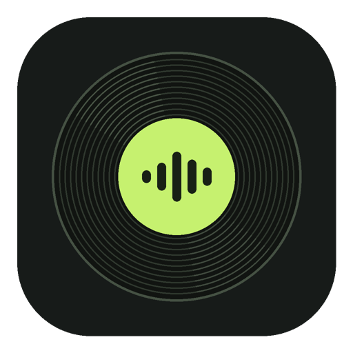

Mac app · Apple silicon
Session Score
Hear what Codex is doing. A bass melody plays while it works. File reads, edits and commands add parts on the next bar.
Free beta v0.2.0-beta.1 · Apple silicon · macOS 13 or later.

Hear an example
Play a sample session and add your own actions · Explore the features
This 40-second example uses sample session events. Listen for the read at 0:10, the edit at 0:16 and the command at 0:20.
Your first session
Unzip the download, move Session Score to Applications, and open it once.
Apple has not notarized this beta. If macOS blocks the first launch and you trust the GitHub download, go to System Settings → Privacy & Security → Open Anyway and confirm. Apple’s first-open instructions
Open Session Score, turn on Link all Codex, then ask Codex to read a file. Your open sessions share one track. When the last one finishes, the music fades.
Pick Classical, Electronic or Hyperpop. Hold a favorite bass melody, or rotate through ten. You can change the instrument and phrase length for each action.
The app reads local Codex logs on your Mac. Prompts and tool output stay out of the music feed.